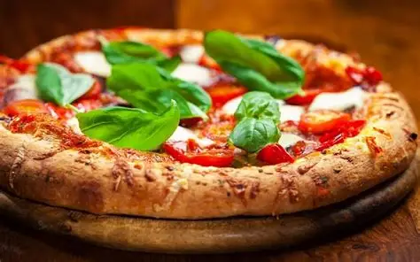
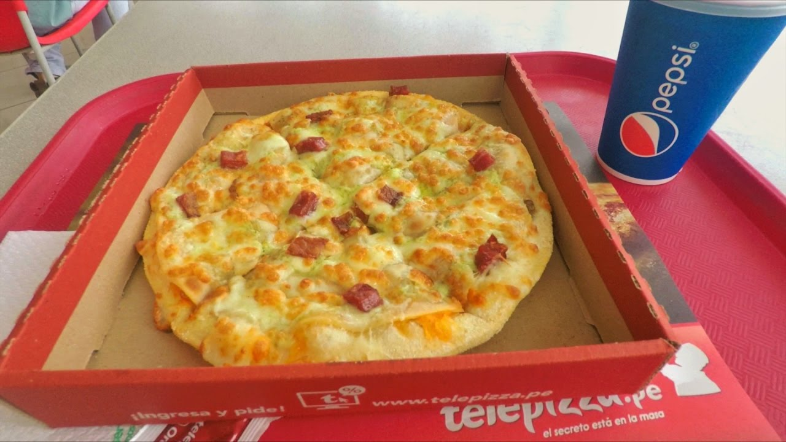

Telepizza
Cadena multinacional española de pizzerías con presencia en varios países del mundo. Tiene su sede central en San Sebastián de los Reyes, municipio de la Comunidad de Madrid.
Salvador Allende, 1, Leganes 916807017En Leganés encontrarás una gran variedad de pizzerías que destacan por su calidad y sabor auténtico. Desde opciones clásicas hasta creaciones innovadoras, cada lugar ofrece una experiencia única para los amantes de la pizza. Descubre dónde disfrutar de ingredientes frescos, masas artesanales y un ambiente agradable para compartir con amigos y familia.
Cadena multinacional española de pizzerías con presencia en varios países del mundo. Tiene su sede central en San Sebastián de los Reyes, municipio de la Comunidad de Madrid.
Salvador Allende, 1, Leganes 916807017Cadena internacional de restaurantes de comida rápida especializada en la preparación y entrega de pizzas.
Calle Zurbarán, 1 esquina Av Salvador Allende, Leganes 910900968Disfruta de nuestras deliciosas pizzas hechas con ingredientes frescos y auténticos sabores italianos que te transportarán directamente a Nápoles.

Esta pizza no cumplió con nuestras expectativas. La masa estaba demasiado blanda y los ingredientes no parecían frescos, lo que afectó negativamente al sabor.
